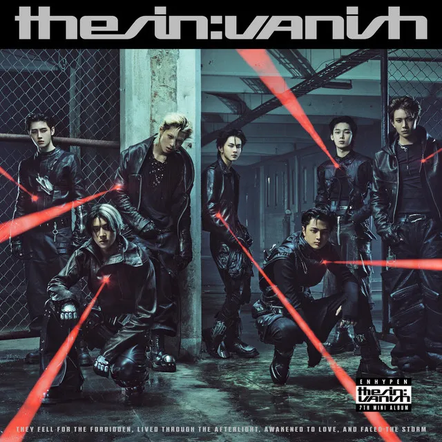

THE SIN : VANISH

曲の長さ
| 長さ | Full | Short |
|---|---|---|
| Lose Island | 02:45 | 01:17 |
| NO Way Bacj (Feat. So!YoON!) | 03:05 | 01:11 |
| Bad Girls Don't Cry | 01:58 | 01:04 |
| Stealer | 02:56 | 01:02 |
| Knife | 02:19 | 01:00 |
| Drama | 03:30 | 01:14 |
曲の詳細
Lose Island
| Full | Short | 難易度 | |
|---|---|---|---|
| イージー | 202 | 83 | 2 |
| ノーマル | 401 | 177 | 6 |
| ハード | 705 | 301 | 11 |
| スーパーハード | 1071 | 468 | 14 |
NO Way Bacj (Feat. So!YoON!)
| Full | Short | 難易度 | |
|---|---|---|---|
| イージー | 256 | 90 | 3 |
| ノーマル | 448 | 163 | 6 |
| ハード | 767 | 280 | 11 |
| スーパーハード | 1229 | 461 | 14 |
Bad Girls Don't Cry
| Full | Short | 難易度 | |
|---|---|---|---|
| イージー | 212 | 103 | 2 |
| ノーマル | 317 | 155 | 5 |
| ハード | 594 | 304 | 10 |
| スーパーハード | 968 | 470 | 15 |
Stealer
| Full | Short | 難易度 | |
|---|---|---|---|
| イージー | 284 | 78 | 3 |
| ノーマル | 483 | 141 | 7 |
| ハード | 968 | 303 | 11 |
| スーパーハード | 1313 | 434 | 15 |
Knife
| Full | Short | 難易度 | |
|---|---|---|---|
| イージー | 242 | 84 | 2 |
| ノーマル | 381 | 146 | 6 |
| ハード | 638 | 244 | 10 |
| スーパーハード | 1009 | 389 | 13 |
Drama
| Full | Short | 難易度 | |
|---|---|---|---|
| イージー | 370 | 119 | 1 |
| ノーマル | 554 | 177 | 3 |
| ハード | 1008 | 332 | 7 |
| スーパーハード | 1335 | 432 | 13 |
1秒あたりのHIT数
| Full | Short | |||
|---|---|---|---|---|
| 難易度 | Hard | SH | Hard | SH |
| Lose Island | 4.3 | 6.5 | 3.9 | 6.1 |
| NO Way Bacj (Feat. So!YoON!) | 4.1 | 6.6 | 3.9 | 6.5 |
| Bad Girls Don't Cry | 5.0 | 8.2 | 4.8 | 7.3 |
| Stealer | 5.5 | 7.5 | 4.9 | 7.0 |
| Knife | 4.6 | 7.3 | 4.1 | 6.5 |
| Drama | 4.8 | 6.4 | 4.5 | 5.8 |